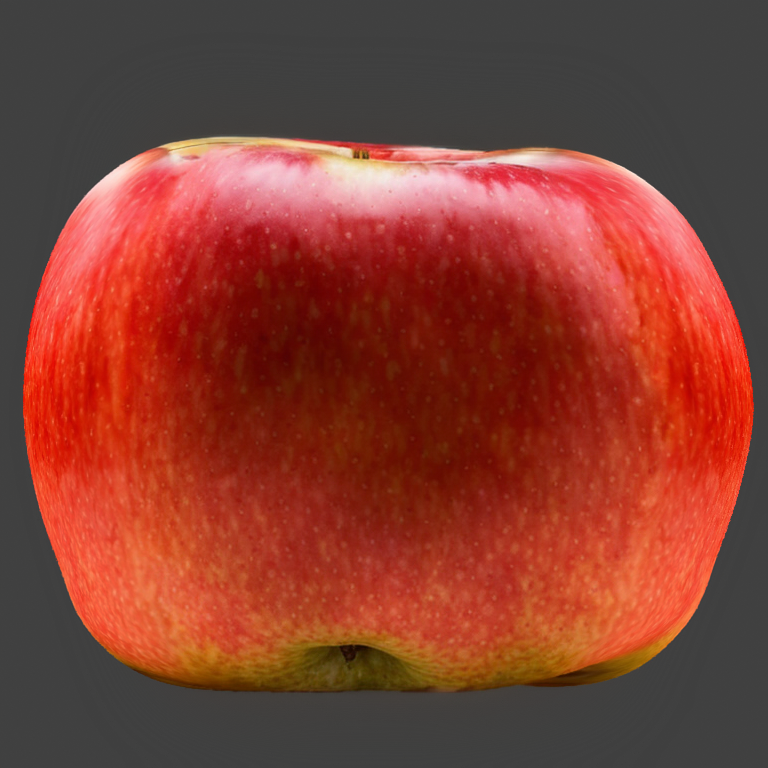

Neural Master extension for Automatic111 Web UI
Расширение является препроцессором и выполняется перед основным циклом SD. Расширенеи совместимо со всеми моделями, эбедингами, моделями контролнет и прочими дополнениями к SD, поскольку не касается их внутренней структуры, а только подготоваливает маски для работы SD.
Расширение наиболее эффективно в сочетании с дополнением NeuralMaster для блендера, которое создает автоматически корректную маску для его работы.
Устанока расширения
Используется стандартная процедура установки расширений для Automatic 1111
Использование
- Выберите тип inpainting fill = 'NeuralMaster'
- Используйте двухканальную маску инпаинта, формат которой опасан ниже.
Примечания
При помощи редактора картинок в веб интерфейсе Automatic 1111 подобную двухканальную маску создать невозможно, однако, ее можно загрузить в режиме Inpaint upload.
При использовании Blender addon Neural Master, маска создается автоматически.
Проблематика
При исопльзовании режима инпаинтинга на вход SD в подается изображение предварительно подгтовленное, в соотвествии с заданной маской инпаинта и параметром Inpainting Fill. То етсь, Inpainting Fill - работает как препроцессор перед работой SD.
В интерфейсей Automatic1111 WebUI доступно 4 варианта Inpainting Fill:
- Fill
- Original
- Nothing
- Noise
Рассмотрим применение каждого режима на конкретном примере дорисовки текстуры яблока c помощью дополнения Blender NeuralMaster.
Исхолдные данные
Будем использовать модель SD 1.5, sampler DPM++ 2M Keras, а также маски Controlnet Normal, Depth (для точного совествия текстуры и 3д-модели) и IP Adapter для задания референсного изображения. В качесве референсного изображения будем использовать некоторую картинку с яблоком, однаковую во всех случаях.
Исходная 3д модель выглядит так:
Сначаал создаем текстуру текстура для модели яблока форнтальной камерой в режиме txt2img при помощи референсной картинки, а также дефолтных параметров адона (ControlNet Depth + Normal + IP adapter).
Получаем изображение:

Поворачиваем камеру на 90 градусов и видим следующее:

На боковой поверхности текстура очень сильно растянута, а в центральной части и вовсе абсолютно неверный белый цвет.
Будем пробоваить дорисовать эту текстуру в режиме инпаинта двумяразными вариантами маски.
Бинарная маска:

Сглаженаня маска:

(Маски сгененированы автоматичеки в NeuralMaster Blender Addon с настрйоками по умолчанию).
Режим Original
Режим Originalне иодицифирует изображение перед подачей его на вход SD.
То есть, на вход SD подается все то же изображение:
Латентное представление которой выглядит так:
 (Сглаженная маска)
(Сглаженная маска)
 (Бинарная маска)
(Бинарная маска)
В результате инпаинта получаем:
При использовании бинарной маски:
При использовании сглаженной маски:

Этот режим отлично подходит, если изображение, которое надо дорисовать, уже примерно похоже на желаемый результат, и его необходимо улучшить. В нашем примере получаем фейл, поскольку SD пытается встроить в картинку широкую белую послосу посередине.
Режим Fill
Режим Fill заполянет изображение в области инпаинта некоторым средним цветом картинки (исключая облатсь инпаинта) и подает его на вход SD.
Таким образом, на выходе препроцессора Fill получаем изображение:
При использовании бинарной маски:

При использовании сглаженной маски:

Латентное представление которого выглядит так:
 (Бинарная маска)
(Бинарная маска)
 (Cглаженная маска)
(Cглаженная маска)
В результате генерации получаем изображение:
При использовании бинарной маски:

При использовании сглаженной маски: 
У изображения появляется темный серый оттенок, потому что средний цвет картинки учитывает и темно-серый цвет фона, а не только цвет полезного объекта - яблока.
В результате, изображение после инпаинта также неудовлетварительно.
Режим Nothing
В этом режиме латентное прсдтавление изображения, в латентном представлении, заливается нейтральным цветом, что выглядит так:
 - бинарная маска
- бинарная маска
 - сглаженная маска
- сглаженная маска
В результате генерации получаем изображения тоже не удовлетворительного качества
При использовании бинарной маски:

При использовании сглаженной маски:

Режим Noise
Препроцессор Noise заоплняет изображение в латентном представлении некоторым рандомным шумом, что выглядит так:
 - бинарная маска
- бинарная маска
 - сглаженная маска
- сглаженная маска
Обычно, это дает нечто совершенно ужасное, однако, в данном случае, благодаря IP Adapter, результат не так уж и плох, но тоже не удовлетворительный.
При использовании бинарной маски:

При использовании сглаженной маски:

Вывод эксперимента
Наилучший результат позволяют достичь режимы Original (обеспечивающий маскимально качественынй стык) и Fill (который учитывает контекст), но они имеют недостатки:
-
Fill при заливке использует ненужный цвет фона, а не только цвет полезного объекта.
-
Original учитывает некорретный исходный цвет картинки в области инпаинта.
Режим Neural Master
Новый режим инпаинта NeuralMaster призван исправить перечисленыне недостатки, заполняя облатсь инпаинта изображением, зависящим от контекста, но более продвинуто:
- Для заполнения использовано не все пространство картинки, а только полезная ее часть, заданная дополнительной маской.
- После созданяи маски на основе контекста, она обединяется с исходной картинкой при помощи градиентной маски.
Формат входной маски инпаинта
Для работы расширения использована двухканальная выходная маска.
-
Канал 0 (красный) содержит маску инпаинта, задаующую область закраски. Эта маска подобдна классической маске инпаинта, однако она не просто бинарная, а градиентная, что неоходимо для работы второй фичи.
-
Канал 1 (зеленый) содержит маску полезного ихображения, средним значенем которого будет заполнено изображение в области инпаинта, что ползволяет игнорировать цвет фона.
Пример работы режима
Рассмотрим работу режима на том же примере - текстурирование яблока.
Входная маска выглядит так.
Здесь маски соединены в одно ихобраэение, как написано выше. Вот как выглдядят ее отдельные каналы:
Канал 0 (red) - маска инпаинта (совпадает со сглаженной маской, использованной выше):

Канал 1 (green) маска полезного объекта:

Внешняя маска выделяет только полезный объект, в данном случае - яблоко.
Здесь обе маски сгенерированы автоматически при помощи аддона Neural Master для блендера, но он могут быт также созданы и при помощи другх инструментов.
При помощи этих масок и входного ихображения, получается слудющее ихзображение, которое подается на вход SD:

Как виджно, на перефирии маски инпаинта, в оласти ее градиента, изображение совпадает с исходным, а центре оно заполнено красным цветом, усредненным цветом яблока.
Латентное представление этого изображения:

Результат инпаинта:

Как видим, этот результат получился наиболее качественным. Причем, такой результат стабильно воспроизводится при использовании различных значений Seed.
Примечания
- Если красный и зеленый канал входной маски совпадают, используется режим Original, о чем выводится сотвествующее предупреждение в консоль.
- Теоретически, расширение может дать некоторый эффект даже без исопльзованяи второго канала, только за счет градиентной маски. Однако, этот вариант в настоящий момент не использован.